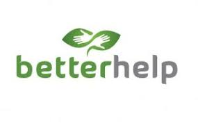
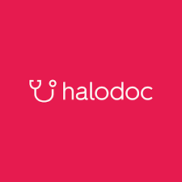
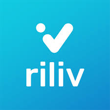

<html></html>
    <head>
        <title>KELOMPOK 1</title>
        <link rel="stylesheet" href="css/mind.css" />
    </head>
    <body>
        <div class="container">
       <!-- NAVIGATION BAR -->
        <div class="navbar-container">
            <ul class="ul-navbar">
                <li class="li-navbar">
                    <a href="index.html" class="a-navbar">HOME</a>
                </li>
                <li class="li-navbar">
                    <a href="mind.html" class="a-navbar">BLOG KESEHATAN</a>
                </li>
                <li class="li-navbar">
                    <a href="about.html" class="a-navbar">ABOUT US</a>
                </li> 
                <li class="li-navbar">
                    <a href="contact.html" class="a-navbar">CONTACT US</a>
                </li>
            </ul>
        </div>
       <!-- NAVIGATION BAR SELESAI -->
       
       <h1>Beberapa Link yang bisa diakses ke Aplikasi untuk membantu konsultasi tentang kesehatan mental</h1>

       <!-- CONTENT 1 -->
        <div class="container-content">
            <a href="https://www.betterhelp.com/">
                
            </a>
            <article class="article-content">
                <h1>BETTER HELP</h1>
                <h3>BetterHelp.com adalah platform kesehatan mental yang menyediakan layanan konseling dan terapi daring. BetterHelp menghubungkan orang-orang dengan terapis berlisensi untuk terapi individu, melalui pesan daring, obrolan langsung, sesi video, dan telepon.</h3>
            </article>        
        </div>
       <!-- CONTENT 1 END -->

       <!-- CONTENT 2  -->
        <div class="container-content">
            <a href="https://www.halodoc.com">
                
            </a>
            <article class="article-content">
                <h1>HALODOC</h1>
                <h3>Halodoc adalah perusahaan teknologi yang berasal dari Indonesia. Halodoc melayani di bidang Kesehatan yang berdiri sejak tahun 2016 di Jakarta oleh Jonathan Sudharta. Tujuan dari aplikasi Halodoc yaitu simplifying healthcare atau memberi kemudahan akses Kesehatan untuk masyarakat Indonesia.</h3>
            </article>
        </div> 
       <!-- CONTENT 2 END -->

       <!-- CONTENT 3 -->
        <div class="container-content">
            <a href="https://riliv.co/id/company">
                
            </a>
            <article class="article-content" >
                <h1>RILIV</h1>
                <h3>Riliv memiliki misi untuk membuat konseling yang mudah dan terjangkau untuk meningkatkan kesejahteraan masyarakat. Riliv dapat mencapai tempat yang bahkan tidak psikolog di daerah tersebut. Pengguna juga dapat mengobrol dengan psikolog kapanpun dan dimanapun mereka membutuhkannya.</h3>
          </article>
        </div>     
       <!-- CONTENT 3 END -->

       <!-- FOOTER -->
       <footer class="footer">
        <div class="footer-container">
            <!-- ABOUT SECTION -->
            <div class="footer-section">
                <h3>Tentang Kami</h3>
                <p>MindfulCare adalah platform kesehatan mental yang berkomitmen untuk memberikan dukungan dan bantuan profesional untuk kesejahteraan mental.</p>
            </div>

            <!-- CONTACT SECTION -->
            <div class="footer-section">
                <h3>Hubungi Kami</h3>
                <div class="contact-info">
                    <p>Email: mindfulcare@gmail.com</p>
                    <p>Telepon: 08978197783</p>
                    <p>Alamat: Jl. Gas Alam no 42</p>
                </div>
            </div>
        </div>
    </footer>
    <!-- FOOTER END -->
        </div>
    </body>
</html>